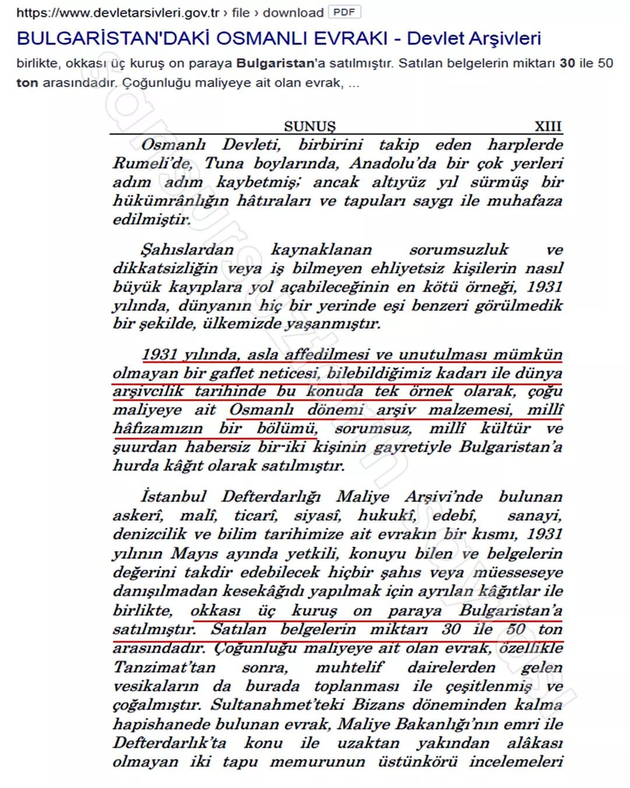

Arşivin satışından haberdar olan ilk kişi, Son Posta Gazetesi yazarı İbrahim Hakkı Konyalı oldu. Yaptığı haberlerle evrak satışının durdurulması için uğraşan Konyalı, bu girişiminde başarılı olamadı. Türk arşivciliğinin kurucusu Muallim Cevdet İnnaçalp, büyük bir hassasiyetle konunun üzerine giderek İstanbul milletvekili Halil Edhem Eldem vasıtasıyla Başbakan İsmet İnönü'ye ulaştı.
Arşivin satışının durdurulması için Manisa Milletvekili Refik Şevket de TBMM'ye önerge verdi. Bu önerge üzerine genelge yayınlanarak arşivin satışı durduruldu.
M.Kemal'den habersiz fidanın bile dikilemeyeceği Cumhuriyet tarihinde bu olay "sorumsuz iki memurun üzerine yıkılarak" üstü kapatıldı.
Bulgaristan "değersiz" diye hurda kağıt fiyatına sattığımız belgelerden oluşturduğu arşiv ile dünyanın en büyük 3.arşivine sahip oldu..
Bugün, Bulgaristan Milli Kütüphanesinde Osmanlıya ait bir milyona yakın arşiv belgesi bulunuyor. Bunların büyük bir bölümü Osmanlı Türkçesi, geri kalanı ise Arapça ve Farsça belgelerdir. Kütüphanede 191 adet kadı sicili, 720 maliye, 405 tımar defteri bulunuyor. 62 yıl sonra Yaklaşık bir yıl süren tarih operasyonu sonunda, Ülkenin hafızası niteliğindeki bu arşivin belgelerin orijinalleri değilse de kopyaları 62 yıl sonra Osmanlı Arşivleri'ndeki yerini aldı.
Dip not : Bugün Bulgaristan kendisine ait olan evrakları hala vermemiştir. Satış sırasında yollara ve denizlere dökülen, çöpe atılan ya da halk tarafından alınan belgelerin akibeti ise hala bilinmemektedir... olay patlak verip giden gittikten iş işten geçtikten sonra gelen tepkilere dayanamayan Mustafa Kemal hükümeti 50 ton evraktan sadece 53 çuvalını 100 liraya geri getirebilmiştir



Dostum bu BELGELİ KANITLARI da inkar ediyorsan lütfen bir psikoloğa görün.